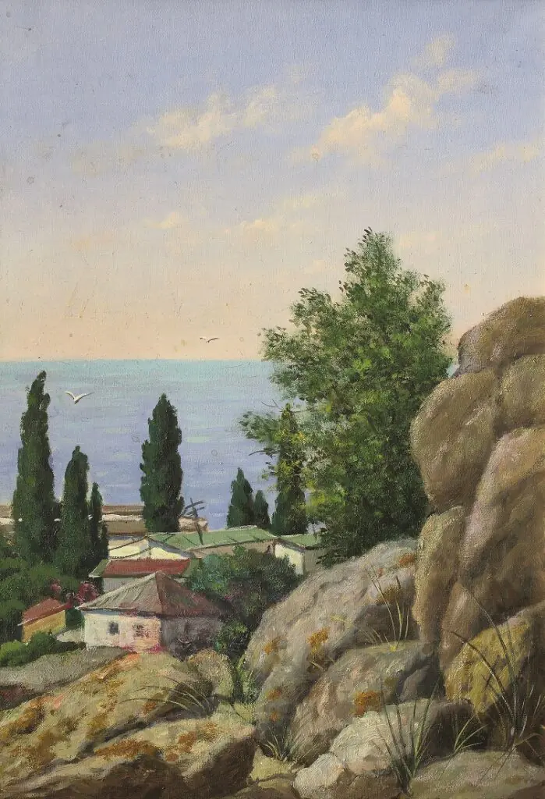
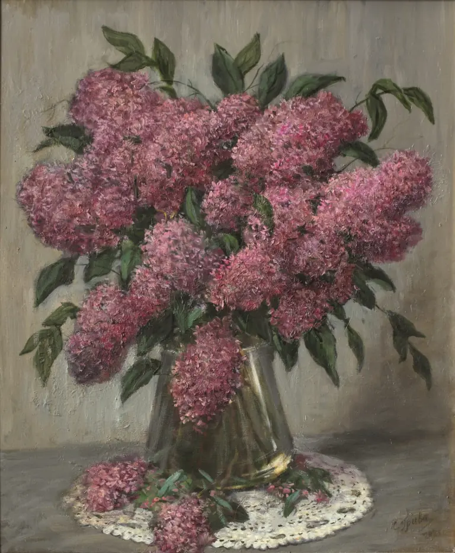
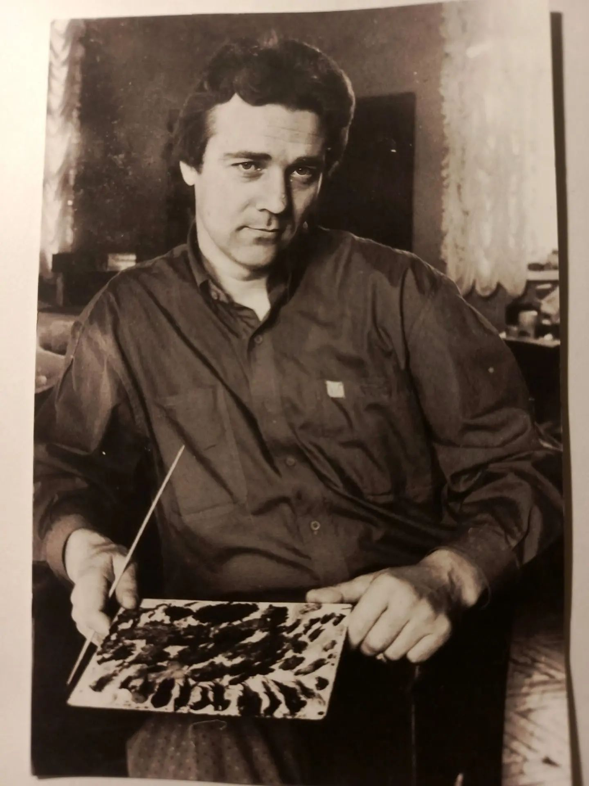
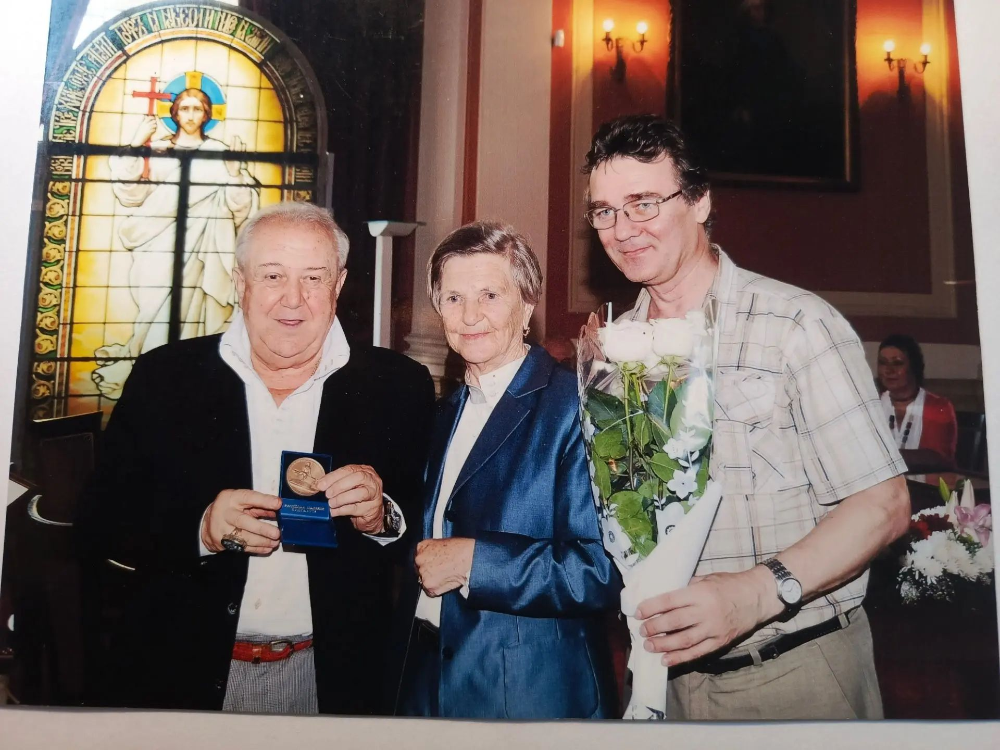

«Вечерний закат»
Лирическая красота вечернего неба над холмами — один из любимых мотивов художника.
Санкт-Петербург · 1959–2026
«Продолжая традиции классической живописи, он передавал лирическое начало в повседневном. Каждая его картина — разговор о времени, свете и тишине».


Об авторе
Сергей Николаевич Грива — петербургский живописец, реставратор и педагог. С 1984 года работал в Научно-исследовательском музее Российской академии художеств, с 1994-го возглавлял отдел реставрации, с 2013 года преподавал в Институте им. И. Е. Репина.
Его живопись выросла не только из академической школы, но и из ежедневного соприкосновения с шедеврами прошлого — от голландских натюрмортов до русской классики.
Наследие художника охватывает четыре основных направления
более 200 работ
более 150 работ
более 100 работ
архивные работы
Подборка из каталога. У каждой работы — название, жанр, год, размер и место написания.
Лирическая красота вечернего неба над холмами — один из любимых мотивов художника.


Шесть вех — от рождения до наследия
Родился в селе Уралово Сумской области.
Начал работу в НИМ РАХ. С отличием окончил ЛХУ им. Серова.
Принят в члены Союза художников России.
Заслуженный работник культуры РФ.
Доцент кафедры реставрации Института им. И. Е. Репина.
Наследие продолжает жить — 500+ работ.
11 персональных выставок — от Голубого зала НИМ РАХ до Музея-усадьбы П. П. Чистякова
Санкт-Петербург · Научно-исследовательский музей РАХ
Санкт-Петербург · первая из шести выставок
Санкт-Петербург · Научно-исследовательский музей РАХ
Санкт-Петербург · последняя прижизненная выставка
Несколько отзывов и публикаций о творчестве художника
«Тонкая живопись, в которой слышна тишина. Пейзажи Гривы — это разговор о времени, а не только о месте».
Искусство · 2014«Продолжатель петербургской школы. В его натюрмортах — внимание к простым вещам, которое сегодня редко встретишь».
Санкт-Петербургские ведомости · 2019«Реставратор, ставший художником. Опыт работы с музейными фондами читается в каждой его картине».
Академия · 2016Фрагменты картин, фотографии мастера и рабочего процесса


О работах, наследии и возможности увидеть картины
Да. Часть работ находится в семейной коллекции, и мы периодически организуем показы. Картины Гривы выставлялись в Музее-квартире И. И. Бродского, Музее Ф. М. Достоевского, Музее-усадьбе П. П. Чистякова и в парадных залах НИМ РАХ.
Стоимость зависит от периода, размера, жанра и состояния сохранности. Напишите через форму — ответим по конкретной картине.
Все работы происходят из семейной коллекции художника. Для каждой картины указаны год, размер, жанр и место написания. При необходимости предоставляются дополнительные материалы.
«Если вы хотите увидеть работы, запросить каталог или обсудить возможность приобретения — напишите. Мы открыты к диалогу с коллекционерами, галереями и исследователями».